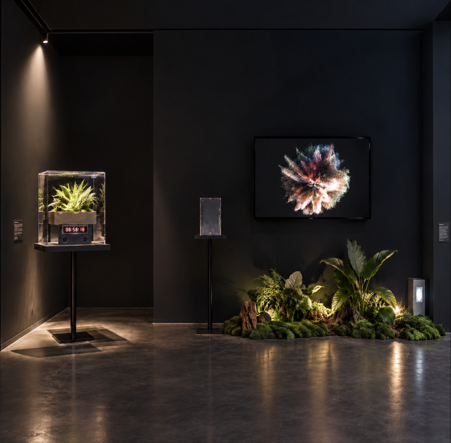

01
2024
盖亚假说 GAIA HYPOTHESIS



项目背景 PROJECT CONTEXT
项目背景说明 / Background paragraph
设计问题 / DESIGN PROBLEM
设计命题 / DESIGN QUESTION
From Seeing Data to Experiencing Ecological Feedback
盖亚假说将地球理解为一个由生命与环境共同参与调节的复杂系统。森林覆盖率的持续变化不仅意味着面积数字的改变，也反映着生态系统结构与稳定状态的长期变化。
森林变化通常通过百分比、折线图与统计报告被理解。虽然这些形式能够准确描述变化趋势，却很难让人直接感受到生态变化具有的累积性、延迟性与系统反馈。因此，本项目关注如何将抽象生态数据转化为一种能够被观察、操作和感知的交互过程。
“如何将长期生态数据转化为一种能够被身体感知的环境反馈体验?”
生态数据
Ecological Data
身体介入
Embodied Intervention
系统反馈
System Feedback
从“看见数据”到“感知生态反馈”
The Gaia Hypothesis describes Earth as a complex system in which living organisms and the environment participate in continuous regulation. Changes in forest coverage therefore represent more than numerical loss—they also indicate long-term shifts in ecological structure and stability.
Forest change is commonly communicated through percentages, charts, and statistical reports. While these formats describe trends accurately, they rarely convey the cumulative, delayed, and systemic nature of ecological change as a perceptible experience. The project explores how abstract ecological data can be transformed into an interactive process that can be observed, manipulated, and experienced.
How might long-term ecological data be transformed into an embodi ed experience of environmental feedback?